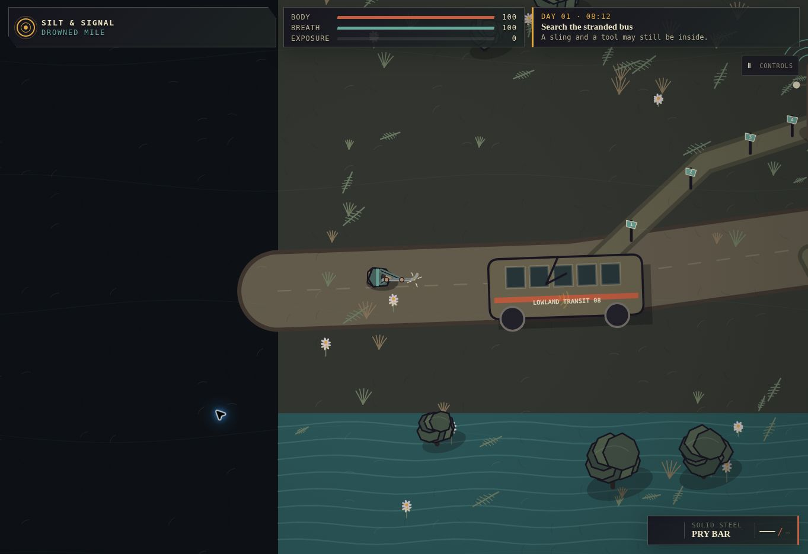
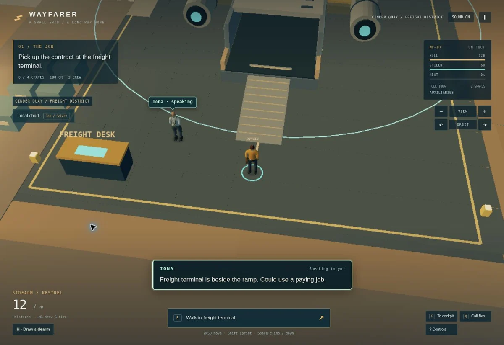
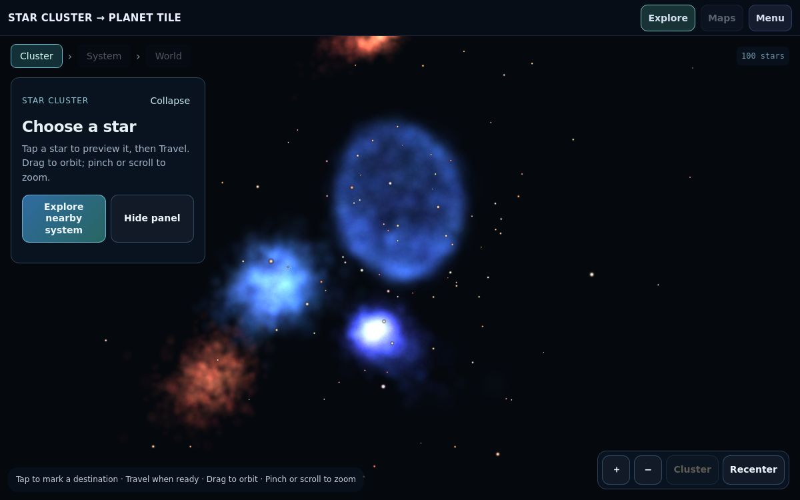
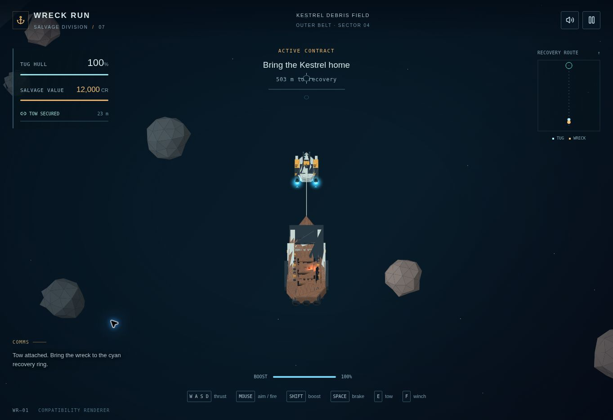
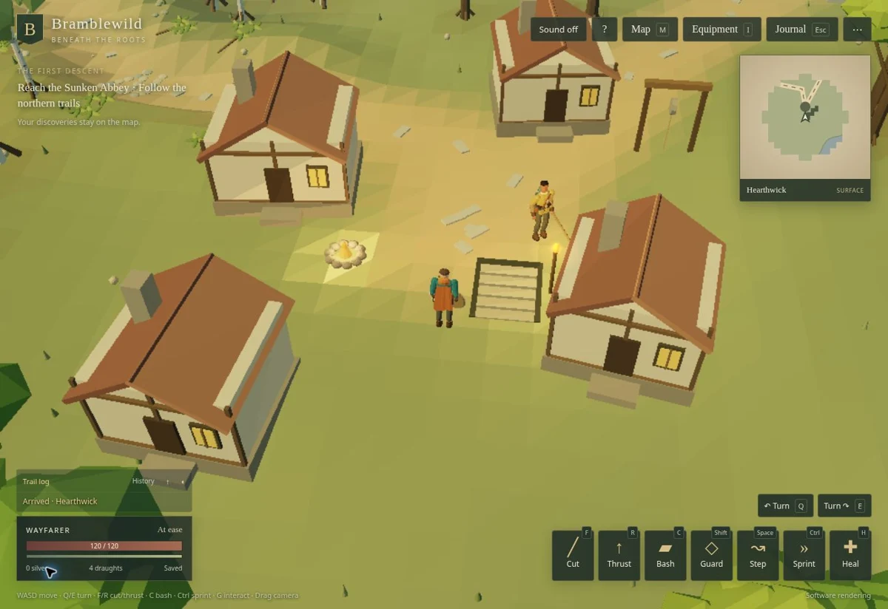
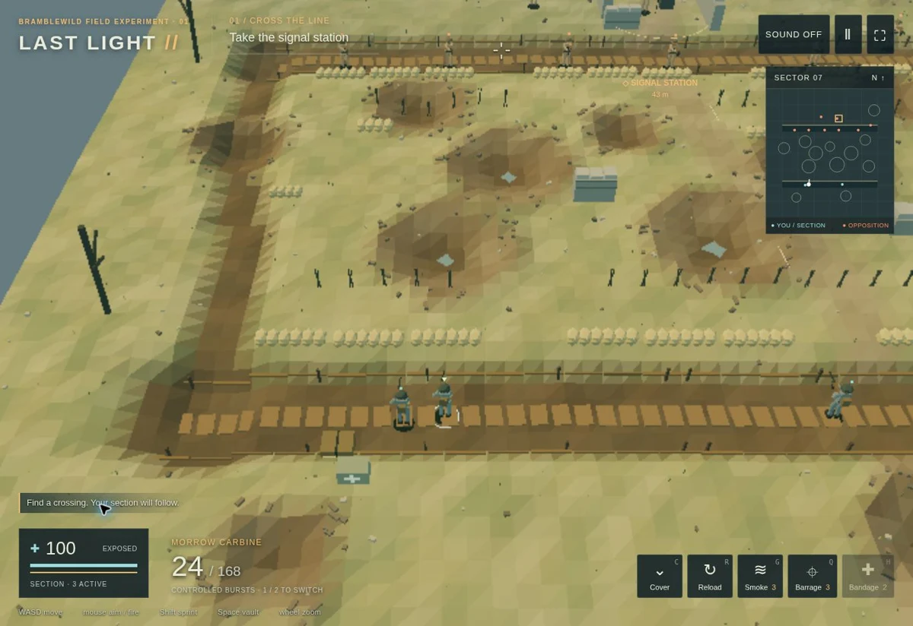
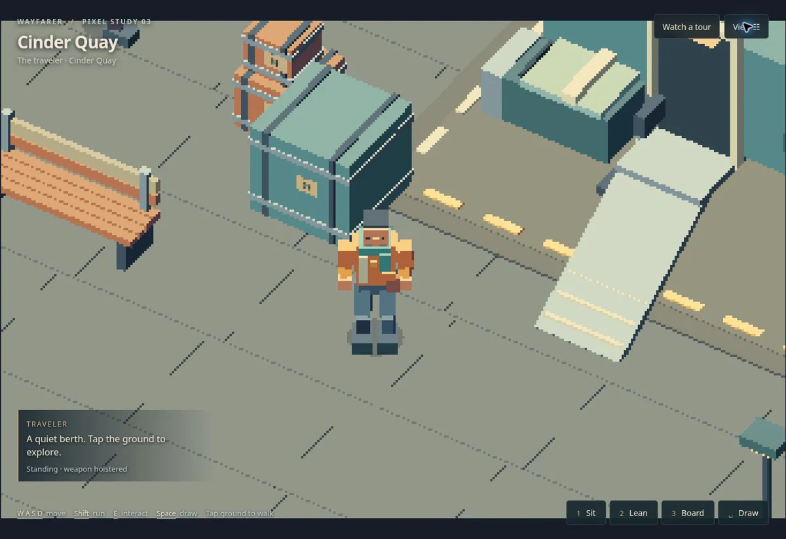
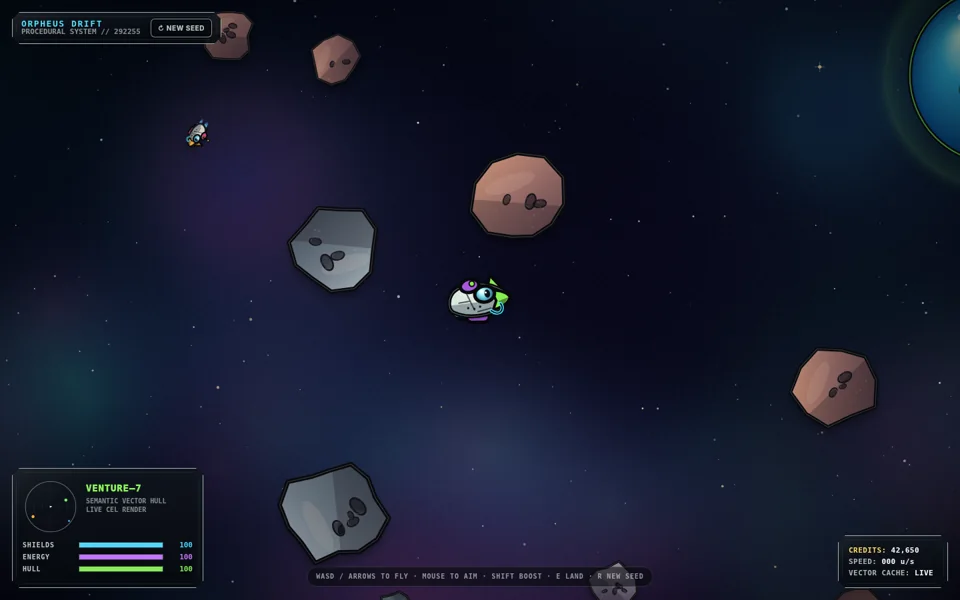
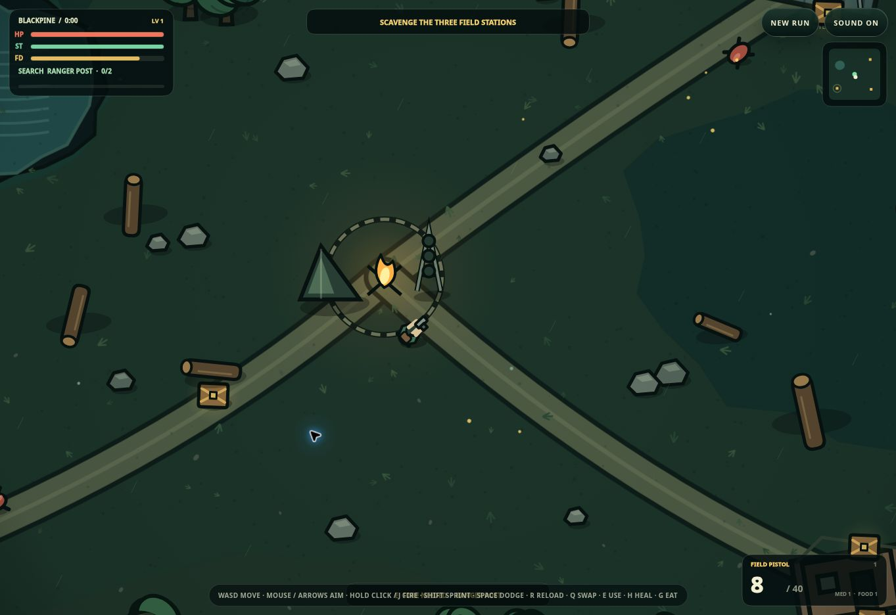
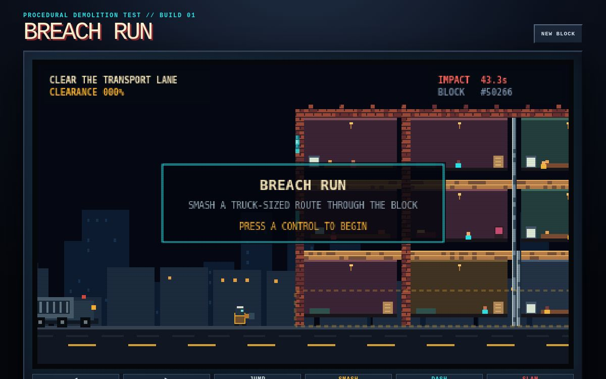

Space & flightv0.10.2
First Light
Build connections between miniature planets, then watch farms, industry and cargo traffic give rise to homes and businesses. Inspect each neighborhood’s history and suppliers.
Spaceflight, living systems, and worlds worth exploring.
22 projects
22 projects
Open a screenshot to play.
Build connections between miniature planets, then watch farms, industry and cargo traffic give rise to homes and businesses. Inspect each neighborhood’s history and suppliers.

Scavenge a flooded world, equip your survivor, and turn salvaged materials into weapons and a working shelter.

Walk your freighter, work with your crew, and fly cargo between frontier ports and an asteroid outpost.

Screenshot: v10Explore a 100-star cluster, travel between nearby systems, and inspect worlds, coastlines and raised terrain.

Tow a damaged freighter through raider territory. Use the wreck as cover and bring its remaining salvage home.

Explore connected woodland trails, villages and dungeons in a procedural 3D action RPG.

Lead a trench assault through shell holes, smoke and infantry cover to capture the signal station.

Explore Cinder Quay in a crisp pixel-art 3D study, with equipment, seating, leaning and ship interactions.

A living pond of evolving organisms. Inspect their anatomy, inherited genes, and family histories.

Pilot a small cartoon ship through a procedural asteroid field and land on illustrated worlds.

A procedural-vector survival RPG: scavenge supplies, manage firearms and explore a dangerous woodland.

A pixel-art demolition game. Break supports and clear a route before the armored transporter arrives.
Explore a vast cylindrical space habitat with towns, farmland, bridges and a reflected-sunlight day/night cycle.
Smaller simulations, visual studies, and earlier projects.

The original petri-dish experiments in population, diet, evolving traits, and radiation.

Simulated radio conversations with synthesized voices, environmental context, and experimental local language models.
A procedural planet workbench with terrain, grid, lighting, and rendering controls.
Build Earthlike worlds with procedural terrain, starfields, and several rendering experiments.
Explore a procedural field of stars and configure the planetary systems around them.
A top-down spaceflight experiment built around thrust, gravity, and orbital motion.
A focused spacecraft study: layered hull plates, thrusters, laser fire, and landing legs.
A colored particle and fluid experiment rendered as a moving field of ASCII characters.
A small Three.js animation study in changing color, size, and motion.
No projects match. Try another name or choose All projects.